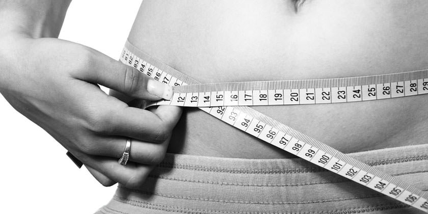

¿Que es la Obesidad?
Obesidad significa tener un exceso de grasa en el cuerpo. Se diferencia del sobrepeso, que significa pesar demasiado. El peso puede ser resultado de la masa muscular, los huesos, la grasa y/o el agua en el cuerpo. Ambos términos significan que el peso de una persona es mayor de lo que se considera saludable según su estatura.
La obesidad se presenta con el transcurso del tiempo, cuando se ingieren más calorías que aquellas que consume. El equilibrio entre la ingestión de calorías y las calorías que se pierden es diferente en cada persona. Entre los factores que pueden afectar su peso se incluyen la constitución genética, el exceso de comida, el consumo de alimentos ricos en grasas y la falta de actividad física.
|
|
Obesidad Infantil
La obesidad infantil es uno de los problemas de salud pública más graves del siglo XXI. El problema es mundial y está afectando progresivamente a muchos países de bajos y medianos ingresos, sobre todo en el medio urbano. La prevalencia ha aumentado a un ritmo alarmante. Se calcula que en 2016, más de 41 millones de niños menores de cinco años en todo el mundo tenían sobrepeso o eran obesos. Cerca de la mitad de los niños menores de cinco años con sobrepeso u obesidad vivían en Asia y una cuarta parte vivían en África.
Los niños obesos y con sobrepeso tienden a seguir siendo obesos en la edad adulta y tienen más probabilidades de padecer a edades más tempranas enfermedades no transmisibles como la diabetes y las enfermedades cardiovasculares. El sobrepeso, la obesidad y las enfermedades conexas son en gran medida prevenibles. Por consiguiente, hay que dar una gran prioridad a la prevención de la obesidad infantil.
|  |
Riesgos de la Obesidad
La obesidad aumenta el riesgo de padecer diabetes, enfermedades cardiacas, derrames cerebrales, artritis y ciertos cánceres. Si usted está obeso, perder por lo menos de cinco a 10 por ciento de su peso puede retrasar o prevenir algunas de estas enfermedades. Por ejemplo, si usted pesa 200 libras, el cinco al 10 por ciento serían unas 10 a 20 libras.
La prevalencia del sobrepeso y la obesidad en niños y adolescentes se define de acuerdo con los patrones de crecimiento de la OMS para niños y adolescentes en edad escolar (sobrepeso = el IMC para la edad y el sexo con más de una desviación típica por encima de la mediana establecida en los patrones de crecimiento infantil de la OMS, y obesidad = el IMC para la edad y el sexo con más de dos desviaciones típicas por encima de la mediana establecida en los patrones de crecimiento infantil de la OMS)
|
|
Causas de obesidad
Hay muchas causas implicadas en la aparición del problema. Además de una mala alimentación o la falta de ejercicio físico, también existen factores genéticos y orgánicos que inducen su aparición
También pueden influir los factores socioeconómicos. En algunos países desarrollados, la frecuencia de la obesidad es más del doble entre las mujeres de nivel socioeconómico bajo que entre las de nivel más alto.
El motivo por el cual los factores socioeconómicos tienen una influencia tan poderosa sobre el peso de las mujeres no se entiende por completo, pero se sabe que las medidas contra la obesidad aumentan con el incremento del nivel social.
Las mujeres que pertenecen a grupos de un nivel socioeconómico más alto tienen más tiempo y recursos para hacer dietas y ejercicios que les permiten adaptarse a estas exigencias sociales. |
 |
Sintomas de Obesidad
La acumulación del exceso de grasa debajo del diafragma y en la pared torácica puede ejercer presión en los pulmones, provocando dificultad para respirar y ahogo, incluso con un esfuerzo mínimo.
La dificultad en la respiración puede interferir gravemente en el sueño, provocando la parada momentánea de la respiración (apnea del sueño), lo que causa somnolencia durante el día y otras complicacionesLa obesidad puede causar varios problemas ortopédicos, incluyendo dolor en la zona inferior de la espalda (lumbalgia) y agravamiento de la artrosis, especialmente en las caderas, rodillas y tobillos.
Los trastornos cutáneos son también frecuentes. Dado que las personas obesas tienen una superficie corporal escasa con relación a su peso, no pueden eliminar el calor del cuerpo de forma eficiente, por lo que sudan más que las personas delgadas.
Del mismo modo, es frecuente la tumefacción de los pies y los tobillos, causada por la acumulación a este nivel de pequeñas a moderadas cantidades de líquido (edemas). |
|